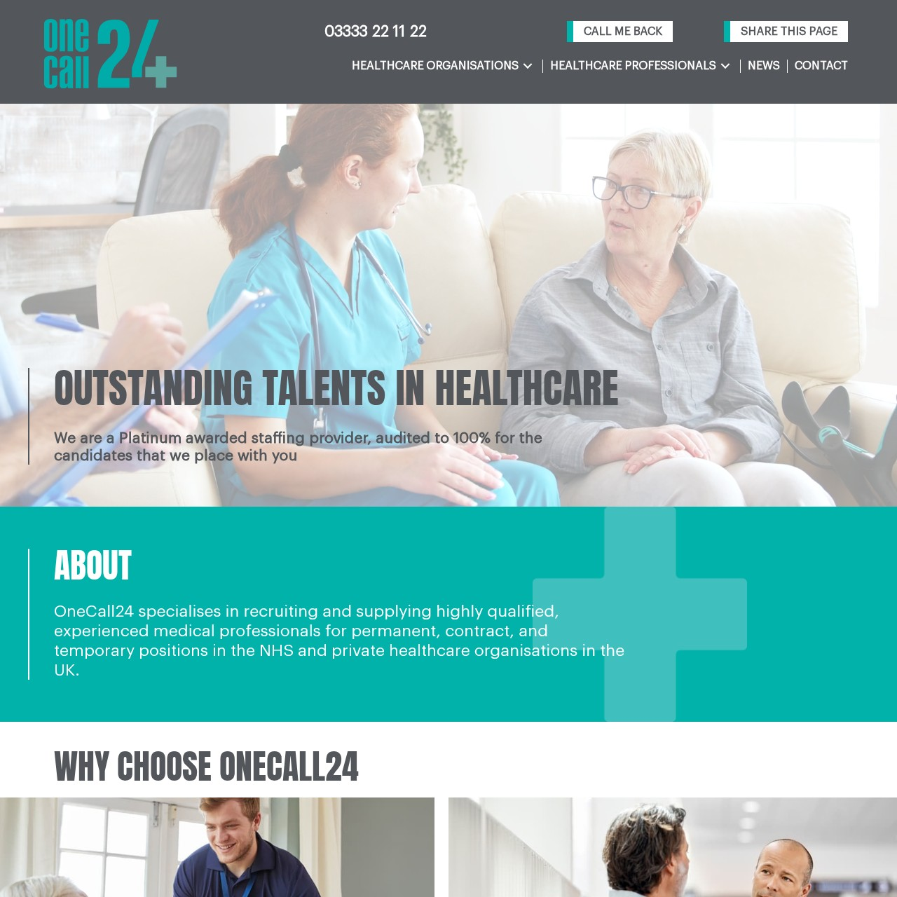

Selected Client Work
WordPress projects built for real business needs and real users.
These projects highlight custom interfaces, dynamic content systems, form workflows, performance improvements, and scalable WordPress implementation.

iDalko
Enterprise-style rebuild with mega menu architecture, SEO improvements, and reusable templates.
View Details
Standby24
Custom recruitment platform with CPT, ACF, SMTP delivery, and dashboard data logging.
View Details
OneCall24 Healthcare
Healthcare staffing site with strong conversion paths, structured admin content, and secure form routing.
View Details
IMS Nhance
Digital services website with custom interactive sections, CPT setup, and backend form storage.
View Details
OneCall24
High-traffic staffing website using WP Bakery, WPForms, and custom front-end enhancements.
View Details
OneCall24 Education
Education-focused platform with custom UI, Gravity Forms workflows, and conversion-focused content sections.
View Details
Aura Staffing
Responsive staffing website with template overrides, Elementor layouts, and multi-form integrations.
View DetailsContact Form to API
Website: contactformtoapi.com
A specialized solution built for connecting Contact Form 7 submissions directly to third-party APIs. This project was designed using Elementor and uses Custom Post Types to manage API connections and logs.
I developed custom WordPress plugins and integrated WooCommerce for premium API subscription plans. The site also includes a dynamic pricing table, documentation pages, and a user-friendly dashboard for managing endpoints.
- Built with Elementor and custom add-ons
- Integrated Contact Form 7 with API logic
- WooCommerce-enabled plan management
- Custom post types for API endpoints
- Responsive and optimized for performance
iDalko
Website: idalko.com
iDalko is a leading provider of enterprise-grade integration solutions for Jira. I was responsible for redeveloping and enhancing their WordPress site to better reflect their technical authority and support their B2B lead generation strategy.
The site was built using Elementor Pro along with custom WordPress templates and add-ons. I implemented flexible and reusable content blocks using Custom Post Types, integrated WooCommerce to manage services and downloadable assets, and ensured seamless responsiveness across all devices.
A major enhancement included the creation of a fully responsive mega menu with multi-level navigation, allowing visitors to browse through complex product offerings more easily. I also focused on performance and SEO improvements to support load times and visibility.
- Developed with Elementor Pro and custom templates
- Mega menu system for multi-level navigation
- WooCommerce setup for services and digital assets
- Custom Post Types for reusable content blocks
- Responsive layout and performance-focused UX
- On-page SEO implementation
Standby24
Website: standby24.co.uk
Standby24 UK is a professional healthcare staffing agency providing job opportunities and workforce solutions across the UK. This website was fully designed and developed from scratch with a performance-first approach and business-aligned UX goals.
I created a custom header and footer layout that reflects the brand's professionalism while improving usability and accessibility. The website was built using Elementor and extended with Ultimate Add-ons for flexibility and responsiveness across all devices.
The site structure is powered by Custom Post Types and Advanced Custom Fields to allow administrators to manage job listings, testimonials, and dynamic sections easily. I also integrated Contact Form 7, Microsoft Outlook SMTP delivery, and an advanced database logging system for form submissions.
- Custom design built with Elementor and Ultimate Add-ons
- Branded responsive header and footer
- CPT and ACF integration for dynamic job listings
- Contact Form 7 with Microsoft Outlook SMTP
- Database logging for form entry storage and export
- Optimized for mobile, tablet, and modern browsers
OneCall24 Healthcare
Website: onecall24healthcare.co.uk
This project focused on building a tailored digital recruitment experience that supports both candidates and administrators in the fast-paced healthcare staffing industry.
I used Elementor Pro and Ultimate Add-ons to create a clean, professional interface with clear calls to action and mobile-friendly layouts. On the backend, I developed a robust content architecture using Custom Post Types and Advanced Custom Fields.
I also integrated multiple Contact Form 7 forms routed securely through Microsoft Outlook SMTP and added a form submission logging system inside the WordPress dashboard for easy access and export.
- Elementor Pro with a modern responsive UI
- CPT and ACF framework for full content control
- Outlook-integrated SMTP for secure form delivery
- Dynamic form tracking with dashboard logging
- Designed for performance and mobile accessibility
IMS Nhance
Website: imsnhance.com
IMS Nhance is a digital transformation and business services provider. I was brought in to design and build a custom WordPress website that delivers both functional flexibility and a modern digital experience.
The site was developed using Elementor Pro alongside Ultimate Add-ons to craft intuitive content blocks. I structured service offerings, case studies, and internal content using Custom Post Types and Advanced Custom Fields.
Several components such as dynamic tabs, filterable sections, and interactive layouts were built manually with custom HTML, CSS, and JavaScript. Contact Form 7 submissions were routed via Microsoft Outlook SMTP and stored in the WordPress database for reporting and backup.
- Elementor Pro UI with Ultimate Add-ons
- CPT and ACF setup for service scalability
- Custom code for dynamic sections
- Contact Form 7 with secure SMTP integration
- Backend form logging for admin access
- Responsive and performance-optimized build
OneCall24
Website: onecall24.co.uk
OneCall24 is one of the UK's leading medical staffing agencies, and this site was built to support high-traffic operations and provide clear access to job opportunities and services.
The site was developed using WP Bakery Page Builder, allowing rapid layout creation with custom styling layers and consistency across many pages. I created a structured layout with flexible content blocks for easy ongoing updates.
For lead capture, I integrated WPForms with conditional logic and embedded live Google Reviews to strengthen trust. I also implemented UI enhancements using custom HTML, CSS, and JavaScript to improve call-to-action behavior, animation triggers, and sticky header interactions.
- Developed with WP Bakery Page Builder
- WPForms with smart logic for lead capture
- Google Reviews API for live testimonials
- Custom CSS and JavaScript for UI enhancements
- Consistent design and scalable page structure
- Optimized for speed, SEO, and multi-device access
OneCall24 Education
Website: onecall24education.co.uk
OneCall24 Education connects schools and educational institutions with trusted teaching and support staff. I delivered a custom-built, user-centric WordPress site designed to reflect the professionalism and care of the brand.
The project was developed using Elementor Pro along with Premium Addons and Ultimate Addons to build flexible, reusable content sections. I implemented Gravity Forms to handle job applications, contact forms, and candidate registrations with conditional fields and export-ready entry logging.
I also built a custom frontend interface to match the brand identity, including testimonial sections, coverage maps, and service highlights, supported by subtle animations and scroll effects.
- Built with Elementor Pro plus Premium and Ultimate Addons
- Gravity Forms for applications and candidate intake
- Custom UI design for educational focus and user clarity
- Interactive sections with animation and scroll effects
- Responsive for mobile and tablet use
- Backend form entry logging and export support
Aura Staffing
Website: imsnhance.in/aurastaffing
Aura Staffing is a healthcare recruitment platform built to connect professionals with opportunities across the country. The site was developed for strong performance and flexible content management.
The site uses Elementor Pro with Premium Addons and Ultimate Addons to create modular, animated layouts. For form management, I integrated both Contact Form 7 and Ninja Forms to support multiple workflows, including inquiries, candidate submissions, and multi-step interactions.
To bypass limitations of the parent theme, I created custom templates using a child theme approach. This gave better control over layout rendering, page-specific structures, and long-term maintainability.
- Built with Elementor Pro plus Premium and Ultimate Addons
- Contact Form 7 and Ninja Forms for multiple use cases
- Custom page templates for layout precision
- Child theme setup for safe overrides
- Responsive and optimized for all screens
- Designed for clarity, accessibility, and performance